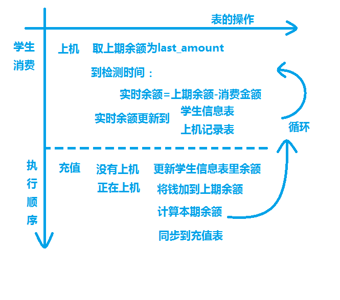

做任何事情之前少不了的是设计和规划！本周机房收费系统的代码没有敲几行！主要是有一个问题没有想清楚，就是钱的问题！怎么做余额，怎么做充值，怎么动态更新，怎么让自己的代码错误减少！这就是常说的全局观！
说这容易做着难！最重要的环节，和钱打交道的环节是我一直头疼的！今天我想到了一个适合我自己的方法解决和大家共享！希望大家斧正！
前提：有三个表分别是“学生基本信息表”，“学生上机记录表”，“学生充值记录表”（后有图）
首先是消费的大概思路：
然后呢，我们可以这么处理正常的消费：

这样就让问题变得简单了，具体的思想史这样的，只要结账时间在充值时间之后，充值的时间是自由的，这样不论学生是在什么时候冲的钱，在上机表里都认为是他在上机之前充的值！在他充值的时候虚拟结账一次！余额就是最新的！
具体的代码初步实现为：
'函数名称：Check_Out
'函数功能：结账
'函数参数：无
'创建日期：2012/8/15
'创建人：**
'修改日期：2012/8/16
'版本：v1.2.0
Public Function Check_Out()
'用于结账的记录集
Dim rstCheckOut As ADODB.Recordset
'sql语句
Dim strSql As String
'消息
Dim strSmg As String
'上次余额
Dim intLastAmount As Integer
'本次余额
Dim intAmount As Integer
'上机时间
Dim datOnlineTime As Date
'下机时间
Dim datOfflineTime As Date
'共上多长时间
Dim intLastTime As Integer
'消费
Dim intCost As Integer
'确保有学生上机再结账
If frmStudentOnOrOffLine.LabCount.Caption = 0 Then
MsgBox "现在没有学生上机！请重试！", , "警告！"
GoTo ExitFunction
End If
'查找出所有未下机的学生
strSql = "select * from line_info where offline_date is null"
Set rstCheckOut = ExecuteSql(strSql, strSmg)
'循环结账
Do
'计算本次余额
'取上次余额
intLastAmount = rstCheckOut.Fields(1)
'取上机时间
datOnlineTime = Format(CDate(rstCheckOut.Fields(3)), "hh:mm")
'现在时间虚拟为下机时间
datOfflineTime = Format(Now, "hh:mm")
'计算消费时间
intLastTime = CInt(datOfflineTime - datOnlineTime)
'计算消费金额
intCost = intLastTime * inthourcost
'计算余额
intAmount = intLastAmount - intCost
'更新到数据库
rstCheckOut.Fields(6) = intCost '消费金额
rstCheckOut.Fields(7) = intAmount '余额
rstCheckOut.Update
'移动到下一个
rstCheckOut.MoveNext
'记录集没有移动到eof（最后一条记录之后）就继续执行
Loop While rstCheckOut.EOF = False
'退出循环
ExitFunction:
End Function
充值的时候，直接将钱冲到online_info表里的上次余额里，而这个思想是，把学生充值的时间向前移动！移动到上机之前！这样，加到上次余额的说法就通了！
这件事情让我看到一个事实！前期的规划是多么的重要！具体的实现是简单地，思想的提炼与应用确实至关重要的一步！在设计或者实现某个功能的时候，切忌没有完全明白就去敲代码！要有整体的认识，再细细规划！一直做下去！就一定能成功！